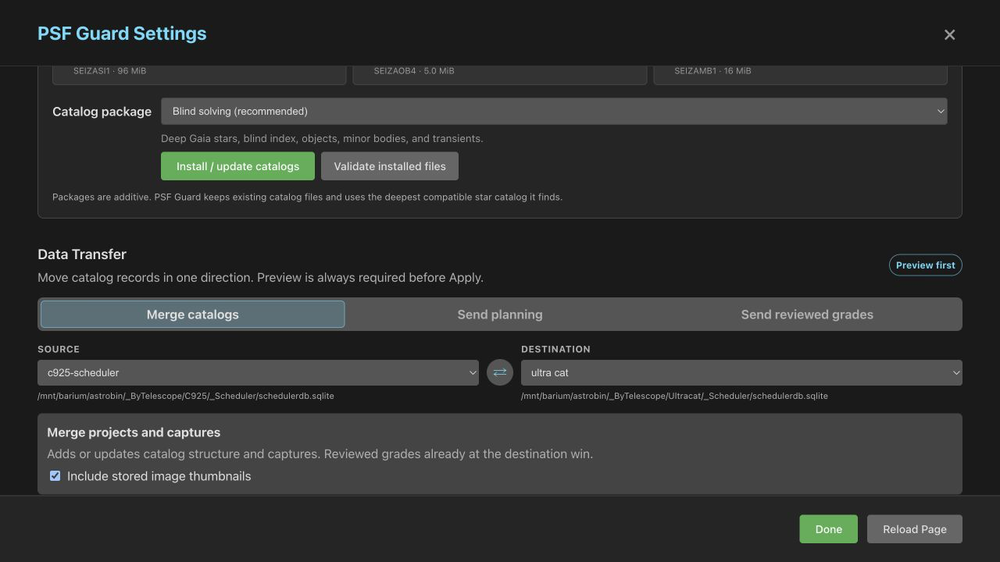

Add image folders and plan the project
Start from plain FITS or XISF folders, build a Target Scheduler-compatible catalog, review the projects and plans PSF Guard derives from the headers, then add costly quality evidence in the background.
Import reads headers first and leaves quality work for later.
Create a catalog from images
The desktop app always allows database changes. For the web server, bind to a trusted interface and opt in:
psf-guard server --host 127.0.0.1 --allow-database-managementOpen Settings → New Database from Images, add one or more absolute image directories, and choose Create & Import. Invalid paths stay in the form and the error names the missing directory.

The UI puts the SQLite file in databases/ beside PSF Guard's
registry and shows the exact path on the database card. Reused names get a
numeric suffix. The CLI creates the file at the path you give it:
Use create-db for a new archive or import to add frames.
psf-guard create-db ./archive.sqlite /data/lights /data/more-lights \
--name "Archive"Use --dry-run to preview a CLI import without keeping the new
file, or --no-register to keep it out of the shared registry.
Supported image formats
A folder scan picks up .fits, .fit,
.fts, and .xisf, in any letter case. Monolithic XISF
files written by PixInsight carry the same astronomy keywords, so they group,
grade, preview, screen, and stack like FITS frames. Sidecar files are ignored.
PixInsight commonly stores floating-point XISF samples between 0 and 1. When the file declares those bounds, PSF Guard maps the samples onto a 16-bit physical scale while reading them. Background and star flux then remain comparable with camera-written frames in the same sequence; the source file is never changed.
What PSF Guard derives
PSF Guard writes a full Target Scheduler-compatible schema. This inherited mapping lets it open an existing Scheduler database, but Target Scheduler is not required. Imported light frames begin as Pending. Their header data becomes projects, targets, shared exposure templates, exposure plans, and acquired-image rows:
OBJECTnames define targets. Each target gets one project by default, even across many nights.- Different telescope, camera, focal length, or binning signatures never share a project.
- Panel-style targets share a mosaic project only when the name root, coordinates, and dates agree. The default date window is 14 days and the center limit is five degrees.
- The median header position becomes the target coordinate. Target Scheduler stores RA in decimal hours and Dec in degrees.
- Filter, gain, offset, binning, and numeric readout mode define a shared exposure template. Its most common exposure length becomes the default.
- Each template and exposure length becomes a plan. Frame counts seed the desired and acquired counts.
Bias, dark, dark-flat, and flat frames follow a separate path. They become
calibration-library records in PSF Guard-owned tables, never projects or
Target Scheduler acquiredimage rows. PSF Guard records their paths
and fingerprints while leaving every source file in place.


Import more frames
Choose Import on a configured database. PSF Guard first shows a dry preview. Before applying it, choose exactly what the next scan should include:
- Import selects Lights and calibration (the default), Lights only, or Calibration only. Frames outside the selected kind are counted and left alone. A calibration-only run can rebuild the library without touching scheduler image rows.
- Folders lists every configured image root and two levels of subfolders with checkboxes. Select a whole root, or clear it and select only the night or processing folder you need. A selected folder inside a configured root does not need a separate database-management grant.
- Skip processing artifacts leaves out integration masters and PixInsight calibrated or registered intermediates. This is off by default; enable it when a processing tree repeats the same exposures under new basenames.
The importer skips basenames already present, attaches a new light to an existing target by object name or coordinates within 0.5 degrees, and creates new structure only for unmatched lights. Calibration frames are deduplicated by canonical path and file fingerprint.
# Preview, then import lights and calibration frames
psf-guard import archive ./new-frames --dry-run
psf-guard import archive ./new-frames
# Rebuild only the calibration library
psf-guard import archive ./new-flats --calibration-only
# Leave derived processing files out of the catalog
psf-guard import archive ./processing-tree --skip-processed--lights-only and --calibration-only select one
frame kind and cannot be combined. --skip-processed applies to
either scope. Use --no-attach when every imported light should
create new catalog structure instead of joining a matching target.
The settings page reads job state from the server when it opens. Closing or reloading the page does not hide a running import; the progress view resumes. One import can run per database.
Backfill quality later
Each database card has two low-priority actions:
- Analyze Missing Quality keeps valid cached evidence and fills gaps.
- Rescan All Quality recomputes star counts and every cached quality signal.

The job works one target at a time, reports progress, and yields to interactive preview or scan work. The N.I.N.A. Fast detector supplies star count and HFR, so new measurements stay comparable with Target Scheduler. Full-star data also feeds flux-based photometry; the pass adds spatial cloud and obstruction metrics plus fresh pointing evidence. A server restart stops the in-memory job, but the persistent cache lets the next run skip completed work.
Write star count and HFR into image metadata controls whether those measured values also fill empty fields in the catalog. It is on by default and remembered for import-time analysis, Analyze Missing Quality, and Rescan All Quality. Existing N.I.N.A./Target Scheduler measurements win, and PSF Guard never writes into the FITS or XISF file itself.
Review and edit the plan
Open Overview → Plan & coordinates to inspect project state and limits, target name and coordinates, rotation, ROI, shared templates, and filter plans. With database management enabled, edit those fields, add a plan, or correct imported project and target grouping.
Open Scheduling limits to edit Target Scheduler's Flats handling rule:
| Choice | When Target Scheduler takes flats |
|---|---|
| Off | Do not schedule flats for this project |
| Every 1–7 sessions | Take flats after the selected number of capture sessions |
| Target completion | Take flats when the target completes |
| Immediate | Request flats immediately |
This is Target Scheduler planning state. It does not override PSF Guard's calibration-frame matching or a stack preview's Calibration mode.
Sync with the telescope
Preview each change before applying it.
Add both databases in Settings, then use Data Transfer. Every action requires a dry preview before Apply:

- Merge catalogs copies new or changed projects, targets, templates, plans, captures, and grades from the telescope into the local database. Local reviewed grades win.
- Send planning sends projects, targets, templates, plans, and rule weights back to the telescope. It leaves telescope image rows, capture counts, and grades alone.
- Send reviewed grades sends Accepted and Rejected grades for matching image GUIDs. Pending grades stay local.
psf-guard sync pull --from telescope.sqlite --to archive.sqlite --dry-run
psf-guard sync planning --from archive.sqlite --to telescope.sqlite --dry-run
psf-guard sync grades --from archive.sqlite --to telescope.sqlite --dry-run